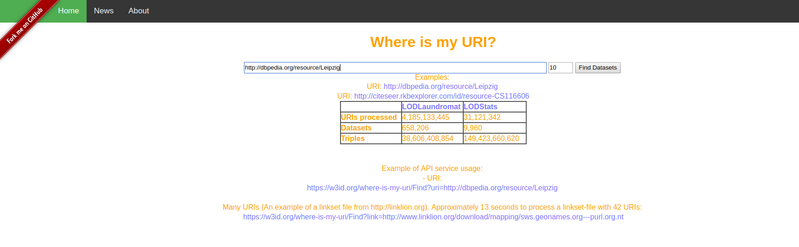
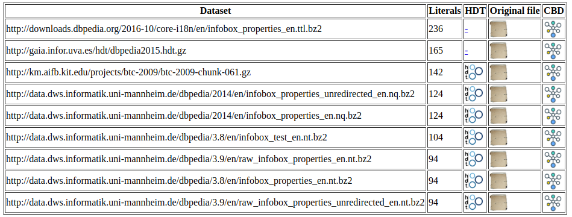
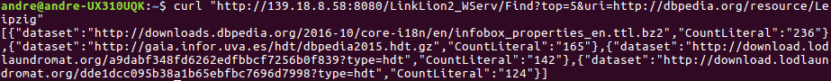

What is WIMU?
Welcome to WIMU API!
Where is my URI?(WIMU) is a service where the input is a URI and the output is a rank of datasets where this URI most likely was defined.
WIMU rank the corresponding datasets by following the rationale upon which a dataset contributes to the definition of a URI proportionally to the number of literals.
All the data from comes from LODStats and LODLoundromat.
Simplifying, Concise Bounded Descriptions (CBDs) are all occurrences of a URI in a dataset. In other words, the occurrences where the URI appears in the Subject or the Object. For more a complete description see (https://www.w3.org/Submission/CBD/).
Git hub repository: https://github.com/dice-group/wimu
Wimu is able to
-Find datasets for a given URI or many URIs (in case, a linkset).
-Generate CBDs for a given URI and Dataset.
How to use WIMU
WIMU can be used via Web interface or as a service API, giving you a output in JSON format.
The web interface
The web interface is based on two parameters, the URI and the the top occurrences. The output is a HTML table showing the datasets and his provenances, allowing download the datasets and generation of the CBDs for the given URI.


The service API (WIMU with JSON)

The service API provides a JSON as output, allowing users to use WIMU with some programing language compatible with JSON.
Now will be presented some examples of how to use:
Single URI
This example returns the top 5 occurrences of Datasets related to the given URI, sorted by number of literals.
Service: https://w3id.org/where-is-my-uri/Find
Parameters
| Parameter | Default | Description |
|---|---|---|
| top | 0 | Top ocurrences of the datasets where the URI was defined. |
| uri | - | URI expected to search . |
Input (Single URI example):
https://w3id.org/where-is-my-uri/Find?top=5&uri=http://dbpedia.org/resource/LeipzigOutput:
[
{
"dataset": "http://downloads.dbpedia.org/2016-10/core-i18n/en/infobox_properties_en.ttl.bz2",
"CountLiteral": "236"
},
{
"dataset": "http://gaia.infor.uva.es/hdt/dbpedia2015.hdt.gz",
"CountLiteral": "165"
},
{
"dataset": "http://download.lodlaundromat.org/a9dabf348fd6262edfbbcf7256b0f839?type=hdt",
"CountLiteral": "142"
},
{
"dataset": "http://download.lodlaundromat.org/dde1dcc095b38a1b65ebfbc7696d7998?type=hdt",
"CountLiteral": "124"
}
]
Working with Linksets (more than one URI)
The most practical case that we have found to work with many URIs was using linksets, (very simplistic talking), that are mappings of resources from different datasets, in the most of cases generated by some Linkset framework such as LIMES, SILK, among others.
We use linksets from the most used linkset repository on the web called LinkLion.
The input is a URL from a linkset and the output is a set containing the URIs source and target, respective datasets with more datatypes and number of datatypes.
Service: https://w3id.org/where-is-my-uri/Find
Parameters
| Parameter | Default | Description |
|---|---|---|
| link | - | URL from a linkset and the output is a set containing the URIs source and target, respective datasets with more datatypes and number of datatypes. |
Input (Multiple URIs(Linkset) example):
https://w3id.org/where-is-my-uri/Find?link=http://www.linklion.org/download/mapping/sws.geonames.org---purl.org.ntOutput:
[
{
"datasetS": "http://lrd900.d2s.labs.vu.nl/all-geonames-2010-11-28_cleaned.n3.bz2",
"uriS": "http://sws.geonames.org/4896861/",
"hdtS": "http://download.lodlaundromat.org/7d24b8cc9fb5255d8d53dee3138c56d3?type\u003dhdt",
"datasetT": "",
"uriT": "http://purl.org/NET/marccodes/countries/ilu#location",
"cDatatypesS": 13,
"cDatatypesT": 0
},
{
"datasetS": "http://km.aifb.kit.edu/projects/btc-2009/btc-2009-chunk-049.gz",
"uriS": "http://sws.geonames.org/4921868/",
"hdtS": "http://download.lodlaundromat.org/e1c04c1c0b740844b189fecd5fb2c7a7?type\u003dhdt",
"datasetT": "",
"uriT": "http://purl.org/NET/marccodes/gacs/n-us-in#location",
"cDatatypesS": 13,
"cDatatypesT": 0
},
...more elements omitted...
Generating CBDs
The input is the URI of the CBD and the URL to download the dataset. The output is the CBD in N-triple format.
Service: https://w3id.org/where-is-my-uri/Find
Parameters
| Parameter | Default | Description |
|---|---|---|
| cbd | - | The URI where that will origin the CBD. |
| ds | - | URL to download the dataset . |
Input (Generating CBDs):
https://w3id.org/where-is-my-uri/Find?cbd=http://dbpedia.org/resource/Leipzig&ds=http://download.lodlaundromat.org/a9dabf348fd6262edfbbcf7256b0f839?type=hdtOutput:
<http://dbpedia.org/resource/Leipzig> <http://dbpedia.org/property/wikilink> <http://dbpedia.org/resource/Leipziger_Neuseenland> .
<http://dbpedia.org/resource/Leipzig> <http://dbpedia.org/property/wikilink> <http://dbpedia.org/resource/æ‹¿ç ´ä»‘> .
<http://dbpedia.org/resource/Leipzig> <http://dbpedia.org/property/wikilink> <http://dbpedia.org/resource/German_Democratic_Republic> .
<http://dbpedia.org/resource/Leipzig> <http://dbpedia.org/property/wikilink> <http://dbpedia.org/resource/Werner_Heisenberg> .
<http://dbpedia.org/resource/Leipzig> <http://dbpedia.org/property/wikilink> <http://dbpedia.org/resource/フェリックス・メンデルスゾーン> .
<http://dbpedia.org/resource/Heinrich_Gustav_Reichenbach> <http://dbpedia.org/property/wikilink> <http://dbpedia.org/resource/Leipzig> .
<http://dbpedia.org/resource/Leipzig> <http://dbpedia.org/property/wikilink> <http://dbpedia.org/resource/Texas> .
...more elements omitted...
An example with Java
See the example beside:
private void exampleJson() throws Exception {
URL url = new URL("https://w3id.org/where-is-my-uri/Find?uri=http://dbpedia.org/resource/Leipzig");
InputStreamReader reader = new InputStreamReader(url.openStream());
WIMUDataset wData = new Gson().fromJson(reader, WIMUDataset[].class)[0];
System.out.println(wData);
}
//the class WIMUDataset:
public class WIMUDataset {
private String dataset, hdt;
public String getDataset() {
return dataset;
}
public void setDataset(String dataset) {
this.dataset = dataset;
}
public String getHdt() {
return hdt;
}
public void setHdt(String hdt) {
this.hdt = hdt;
}
}
Developers guide
Setup your eclipse Java environment:
You can clone the whole repository in which will include both projects (Database index creation and the webservice). Or download the 2 eclipse projects from here.
More details, please see github repository (https://github.com/dice-group/wimu).
Generating the index
Please see the examples beside.
Generating the index:
java -jar wimu.jar create dumpDir ldir < dbpedia / dumps / endpoints / hdt / all / * >
where:
dbpedia - Process only Dumps from DBpedia.
dumps - Process all Dumps from the whole LODStats.
endpoints - All Endpoints from LODstats.
hdt - Process HDT files from LODLoundromat and rdfhdt.org.
all - everything.
To search in the index via command line:
java -jar wimu.jar search < URI >
where:
URI - specific URI to search.
You can also download a compiled version of wimu.jar.
Running the web interface (in your own computer using docker):
See the wimu docker.
More information:
The information is not enough, no problem, you can always ask André Valdestilhas or Tommaso Soru. They will be glad to talk with you :)
Contact:
André Valdestilhas
email: valdestilhas@informatik.uni-leipzig.de
Tommaso Soru